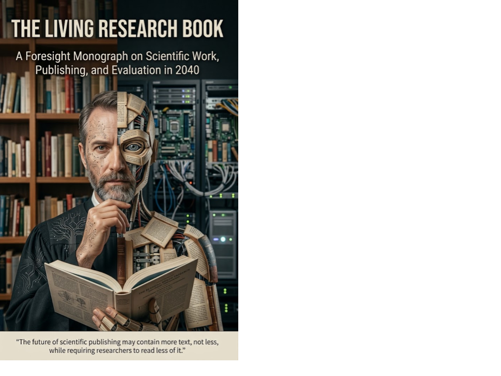

Executable Science · Axiologic Research Editions
The Living Research Book
A Foresight Monograph on Scientific Work, Publishing, and Evaluation in 2040
The future of scientific publishing may contain more text, not less, while requiring researchers to read less of it.
The paper was an interface, not science
A scientific article was an extraordinarily successful interface for a world of print distribution, periodic editorial workflows and scarce reviewer attention. But a serious research programme now produces far more than claims and prose: datasets, software, models, protocols, negative results, design decisions, review, policy constraints and an evolving web of dependencies. Much of that work is either absent from the article or scattered across repositories that cannot show how it fits together.
The Living Research Book advances a concrete foresight position for 2040. The article survives, but increasingly as a release note, priority record or concentrated novelty statement attached to a larger and more persistent scientific object. The canonical human interface is a maintained, versioned research book—one capable of integrating a programme’s concepts, evidence, methods, alternatives and history without requiring every reader to traverse it linearly.
Atomic underneath, monographic above
Why would AI make long research books more useful? AI can reduce the cost of maintaining and navigating a rich record. One reader may need a ten-minute briefing, another a methodological path, a third an executable tutorial and a reviewer a map from claims to evidence. The underlying source can remain extensive while each person reads only a path suited to their question.
What is the publication architecture? The book proposes a structured substrate of versioned claims, evidence, code, data, decisions, provenance, contribution records and policy labels. An epistemic publication compiler turns this substrate into coherent public editions, controlled reviewer capsules and other accountable views. Atomic components make correction and reuse possible; the monograph above them supplies integration and human meaning.
Does openness mean exposing everything? No. The public book is a curated boundary, not a dump of the research workspace. Confidential information, private data, security-sensitive material, pre-filing inventions and irrelevant internal history may remain protected. The governing principle is epistemic sufficiency: disclose enough for a claim or review task, while preserving legitimate privacy, intellectual-property and security boundaries.
AI can decouple the size of the scientific record from the amount that any individual must read.
A research world that can be reviewed
The proposal changes more than document format. It lets teams recognise contributions to claims, experiments, software, validation, curation, correction and maintenance rather than compressing them into author order. It lets reports and funder views become projections of maintained knowledge rather than separate rewriting exercises. It lets reviewers interrogate a research world, reproduce selected computations and trace assertions to evidence rather than performing literature archaeology from scratch.
This is not a prediction of inevitability. A living research book could become a cathedral of fluent emptiness, a surveillance instrument, a privacy failure or a polished but false scientific world. The monograph identifies those risks so that the architecture can be tested, revised or rejected. Its wager is that richer records, independent critique and selective transparency can make science both easier to navigate and harder to evade.